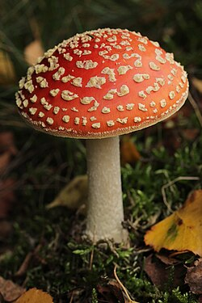

Welcome to the World Beneath Our Feet
Fungi are among the most mysterious and essential organisms on Earth. They break down dead material, recycle nutrients, and form partnerships with nearly all living plants. Without fungi, forests would collapse.
While some species — like the bright red Amanita muscaria — are easily recognizable, others live deep underground, forming hidden webs of mycelium that connect entire ecosystems.
Why Study Fungi?
- They maintain the balance of life by recycling nutrients.
- They produce antibiotics, alcohol, and other medicines.
- They inspire scientific discoveries in health and technology.